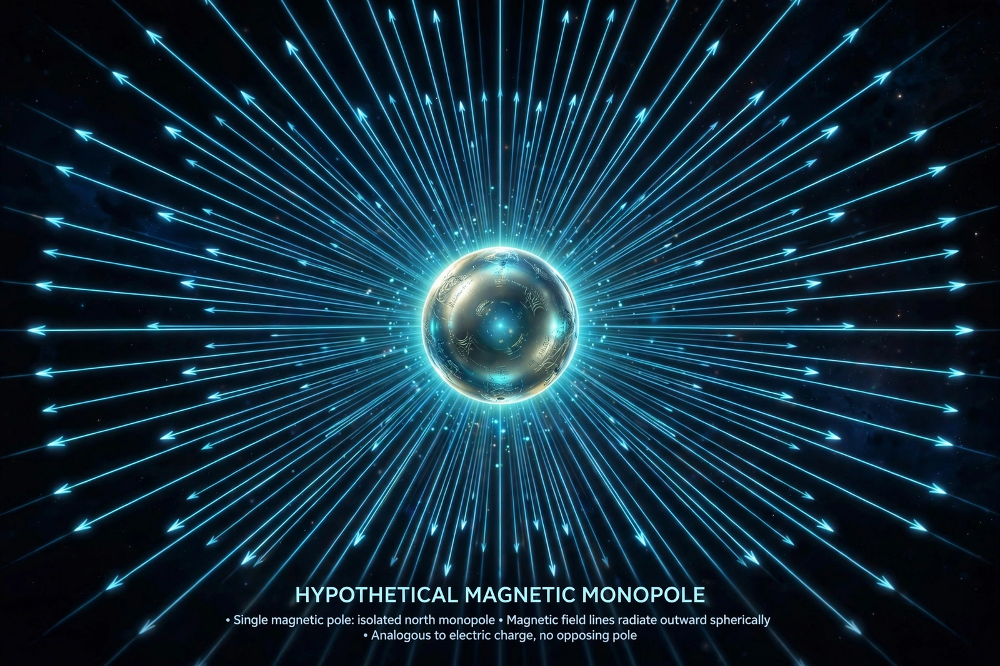

Magnetic monopole

[Image: Illustration of a hypothetical magnetic monopole emitting radial magnetic field lines like a point charge]In particle physics, a magnetic monopole is a hypothetical elementary particle that is an isolated magnet with only one magnetic pole (a north pole without a south pole, or vice versa). All observed magnets are dipoles — cutting a bar magnet yields two smaller dipoles, because magnetic field lines form closed loops with no beginnings (Gauss's law for magnetism).
Paul Dirac showed in 1931 that a single magnetic monopole anywhere in the universe would explain why electric charge is quantised: quantum mechanics then requires the product of electric and magnetic charge to be a multiple of ħ/2, so all electric charges come in units — as observed. Grand unified theories (notably 't Hooft and Polyakov, 1974) predict superheavy monopoles (~10¹⁶ GeV) as topological defects formed in the early universe; their apparent absence was one motivation for cosmic inflation, which dilutes them. Decades of searches — in cosmic rays, colliders, moon rock and ancient mica, including the MoEDAL experiment at the Large Hadron Collider — have found none confirmed; a famous single candidate event (Blas Cabrera, 1982) was never repeated. Analogues of monopoles ('spin ice' quasiparticles) were created in condensed matter in 2009.
Why physicists care
Monopoles would complete the symmetry between electricity and magnetism that Maxwell's equations nearly possess, explain charge quantisation, and are an almost unavoidable prediction of grand unification. Their non-observation is therefore informative: it constrains GUTs and early-universe physics, while the theoretical structures they inspired — topological solitons, dualities — have proven fertile regardless.